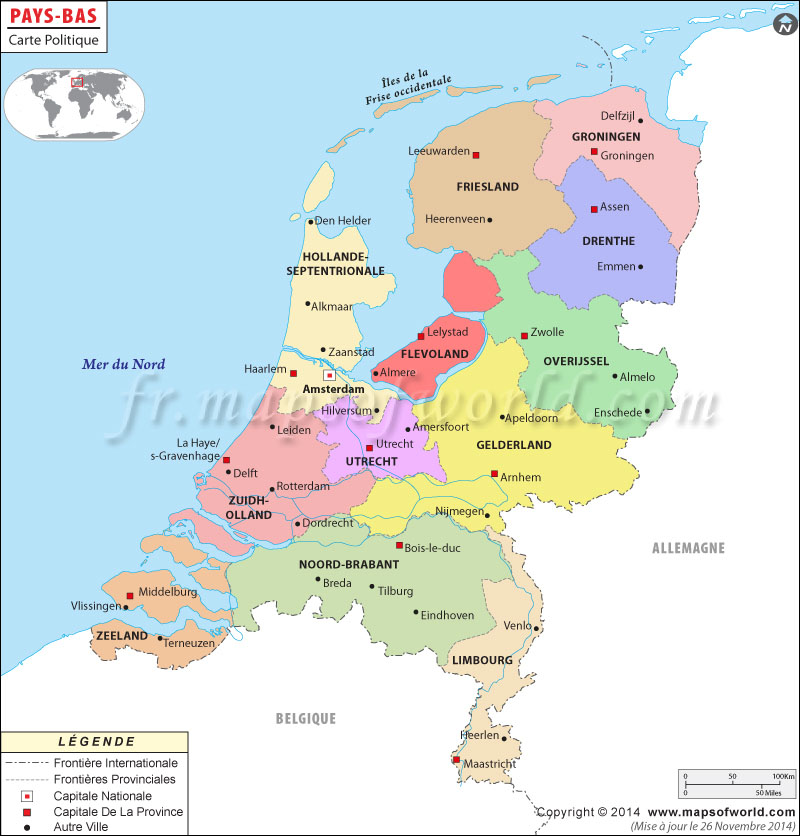

Partez à la découverte des Pays-Bas!
Paysages grandioses, vie douce et trésors patrimoniaux… Envolez-vous pour les Pays-Bas avec
notre
sélection des plus beaux endroits à visiter dans ce superbe pays ! Situés au Nord-ouest de
l’Europe,
entre la Belgique, et l’Allemagne et bordés par la mer du Nord, les Pays-Bas sont une monarchie
constitutionnelle de dix-sept millions d’habitants, répartis sur une superficie de 45 508
kilomètres
[…]
Les Pays-Bas (en néerlandais : Nederland), en forme longue le royaume des Pays-Bas (Koninkrijk
der Nederlanden), sont un pays d'Europe de l'Ouest, frontalier avec la Belgique au sud et
l'Allemagne à l'est, possédant également une frontière avec la France sur l'île de Saint-Martin
(Caraïbes). Monarchie constitutionnelle comptant 17,2 millions d'habitants en 2019, le pays a
pour capitale Amsterdam1, bien que les institutions gouvernementales — exécutif, législatif et
judiciaire7 — siègent à La Haye. Il est administré en quatre territoires autonomes : Aruba,
Curaçao, Saint-Martin et le territoire européen8, lui-même divisé en douze provinces, auxquelles
s'ajoutent trois autres communes à statut spécial situées outre-mer (Bonaire, Saba et
Saint-Eustache). Géographiquement, le pays dispose de caractéristiques uniques, possédant l'une
des altitudes moyennes les plus faibles au monde : environ un quart du territoire en Europe est
situé sous le niveau de la mer du Nord, qui le baigne à l'ouest et au nord9,10,11. 18,41 % de la
superficie totale des Pays-Bas est couverte d'eau.
